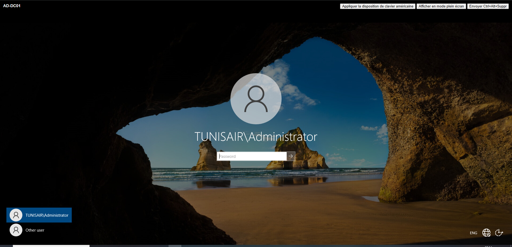
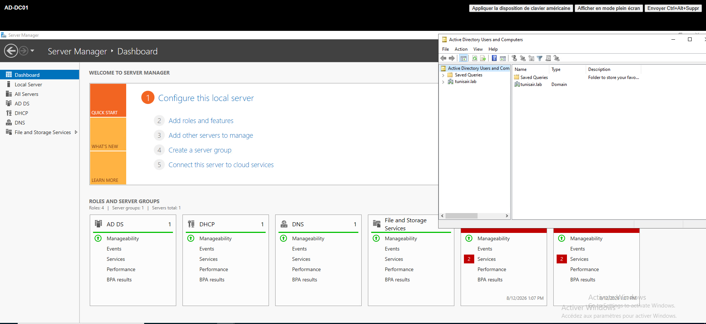
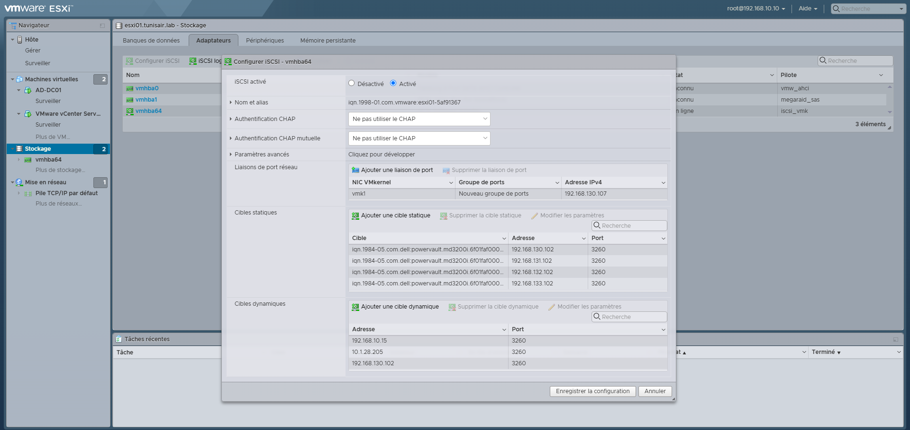
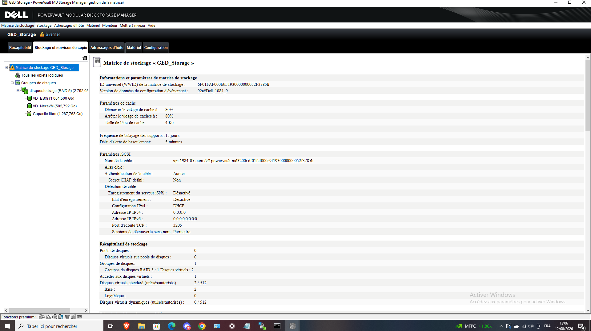
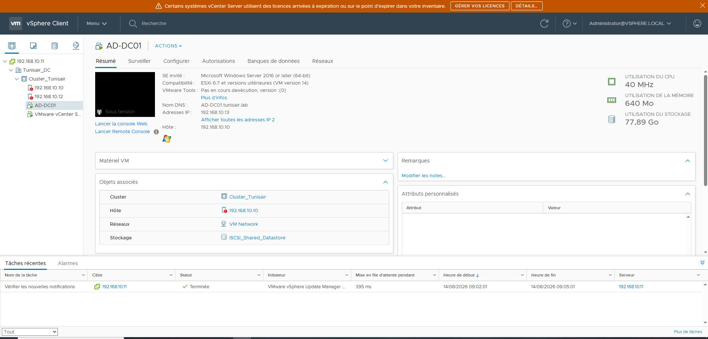
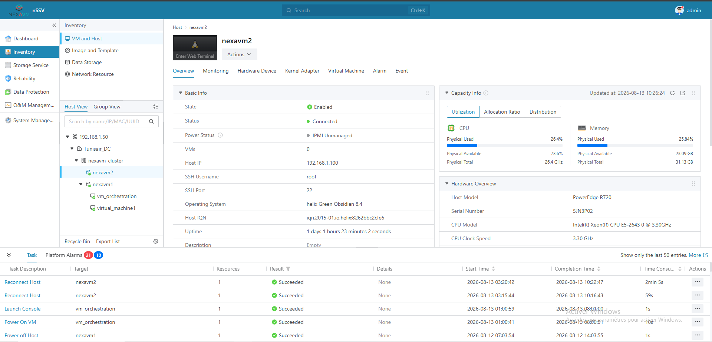
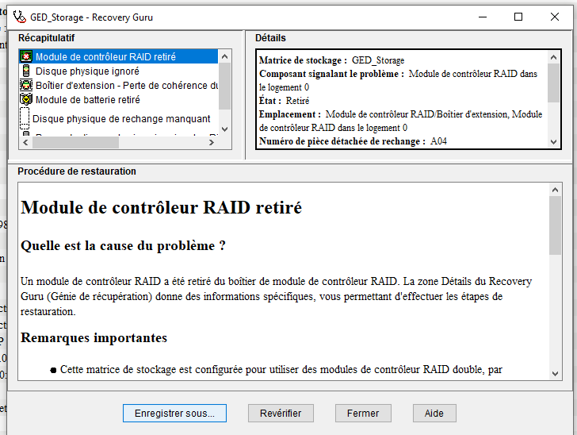
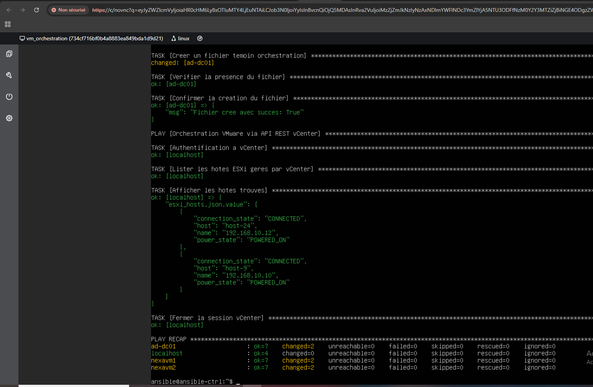
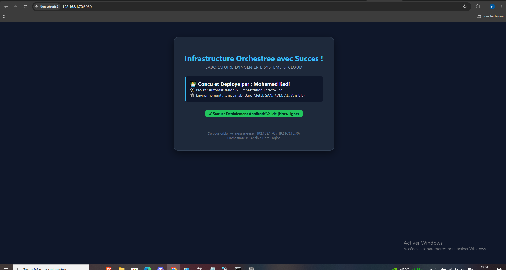

Mohamed Kadi — étudiant en administration systèmes & réseaux. Je passe autant de temps à diagnostiquer une panne réelle qu'à suivre une procédure : contrôleur RAID en panne, sous-réseaux qui ne se parlent pas, environnements sans accès internet. C'est là que j'apprends le plus.
Conception et dépannage d'une infrastructure d'entreprise associant VMware vSphere et CNware/ZStack, reliés au même stockage SAN Dell PowerVault en iSCSI, avec un Active Directory centralisé et une couche d'orchestration Ansible capable de piloter du Linux, du Windows et du VMware depuis un seul point de contrôle.
La partie la plus formatrice du projet : pas de procédure toute faite, des pannes à comprendre.
Un même nœud de contrôle Ansible pilote trois mondes différents :

Authentification centralisée sur le contrôleur de domaine AD-DC01 (Domaine TUNISAIR\Administrator).

Gestionnaire de serveur AD DS, DNS et DHCP validé pour le domaine d'entreprise tunisair.lab.

Liaisons de port réseau (VMkernel) et liaisons statiques/dynamiques vers les cibles SAN iSCSI.

Organisation RAID 5 et allocation des volumes virtuels dédiés aux clusters ESXi et NexaVM.

Supervision du cluster VMware d'entreprise et des nœuds d'hyperviseurs associés.

Infrastructure de virtualisation secondaire hébergeant les 2 nœuds NexaVM et le serveur d'orchestration.

Gestion de l'incident matériel initial sur le contrôleur RAID et maintien de la continuité de service.

Exécution du playbook d'orchestration en ligne de commande validée avec zéro erreur (failed=0).

Page de validation de déploiement Ansible en environnement totalement isolé (hors-ligne).
Courte description du projet, technologies utilisées, résultat obtenu.
Courte description du projet, technologies utilisées, résultat obtenu.